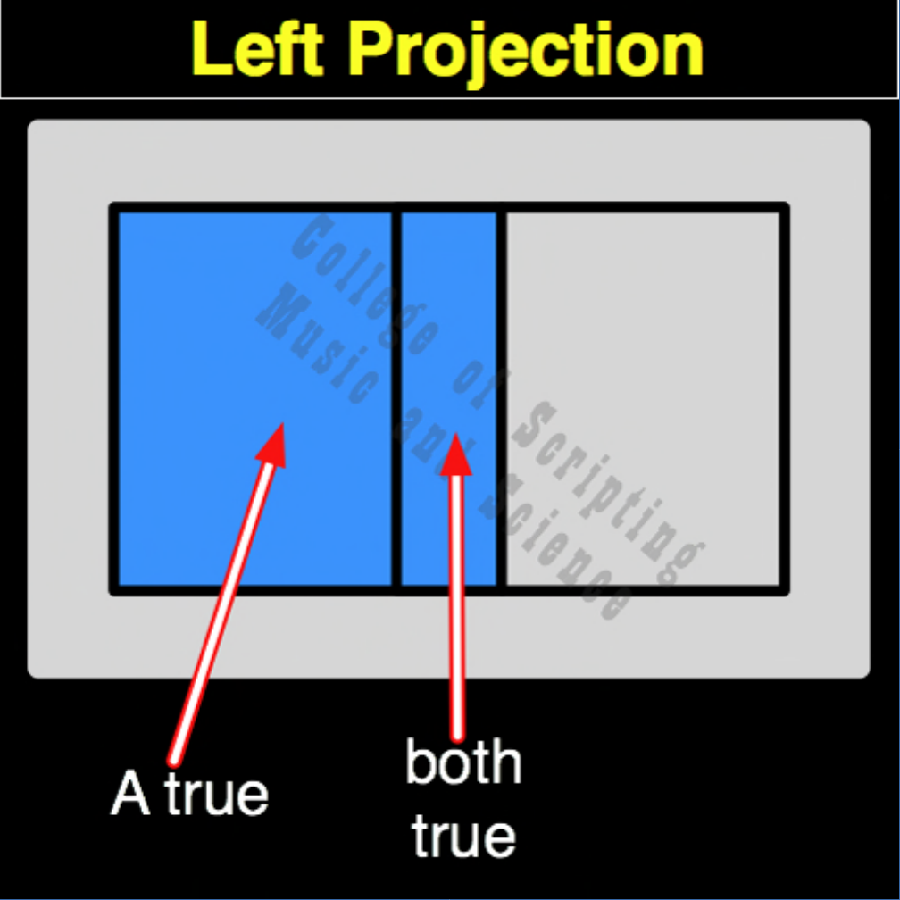

| LP | |
|---|---|
| 0 + 0 | = 0 |
| 0 + 1 | = 0 |
| 1 + 0 | = 1 |
| 1 + 1 | = 1 |

In the ethical architecture of Starfleet, Left Projection (LP) represents absolute focus and unwavering identity. It is the mathematical proof of a system, or a Captain, remaining entirely true to its core mission (Input A) while completely ignoring external noise, distractions, or secondary pressures (Input B). If the core mission dictates rest (0), the output is rest (0), regardless of what external forces demand (1). If the core mission dictates action (1), the ship acts (1), utterly unfazed by external variables. It teaches cadets the power of the Unshakable Foundation: true sovereignty means external chaos cannot alter your internal state.
| LP Gate FLIPPED to make LC Gate | |
|---|---|
| 0 + 0 = 0 | FLIPPED becomes 1 |
| 0 + 1 = 0 | FLIPPED becomes 1 |
| 1 + 0 = 1 | FLIPPED becomes 0 |
| 1 + 1 = 1 | FLIPPED becomes 0 |
LP is the OPPOSITE of LC (Left Complementation).
LP completely ignores Input B. The output is always exactly equal to Input A.
Because it is a Pillar of Identity, LP is incredibly resilient: It is a Self-Dual gate.
// gateLp.js
function gateLp(a, b)
{
// The system remains utterly true to its core directive (Input A), ignoring all external noise (Input B).
if (a == 1)
{
return 1; // Core directive is active
}
else
{
return 0; // Core directive is at rest
}
}
//----//
/*
LP
0011
A B
0 0 = 0
0 1 = 0
1 0 = 1
1 1 = 1
Opposite: LC
*/